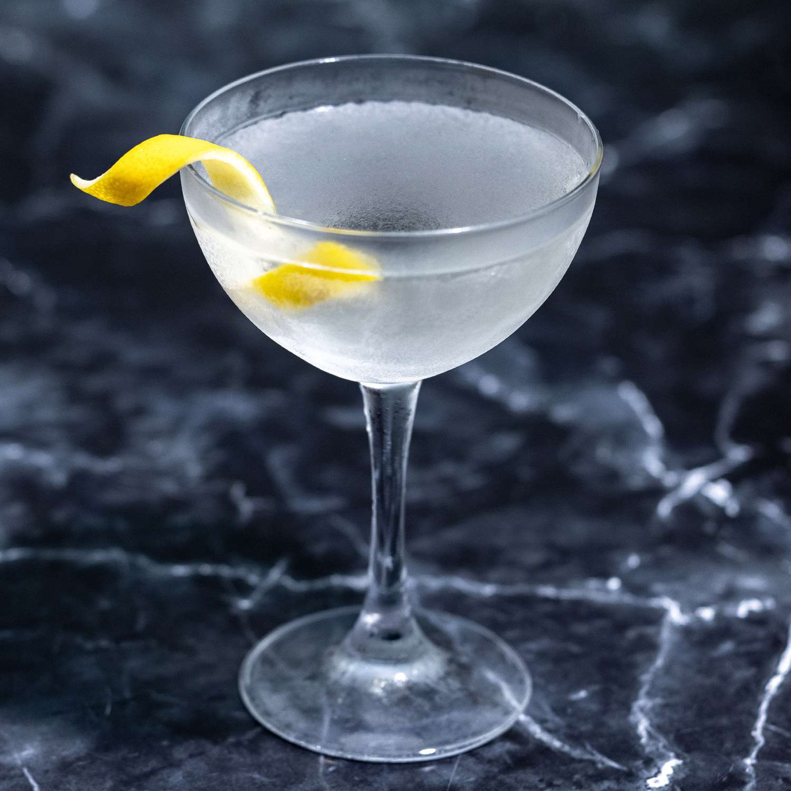

The Vesper Martini (aka Original James Bond Martini)
Return Home

Initial Notes
The original James Bond Martini is, at the present moment, impossible to
recreate. The specific gin it uses differs between the United States and
the United Kingdom, as well as it's signature ingredient, the appartif
Kina Lillet, is no longer made. This is a best-effor approximation of what
it might have tasted like, and, regardless, tastes pretty damn good.
Ingredients
-
3 measures Miller's Icelandic Gin (or other high quality gin of your
choice)
- 1 measure Vodka
- 1/2 measure Cocci Americano
- lemon peel, for garnish (optional)
Instructions
- Add ice and water to champagne coupe or martini glass.
- Add ice, gin, vodka, and Cocci Americano to shaker.
- Shake vigorously until ice cold.
- Pour out water and ice from champagne coupe and strain in drink.
- Add a twist of lemon peel for garnish if disired.
Return Home